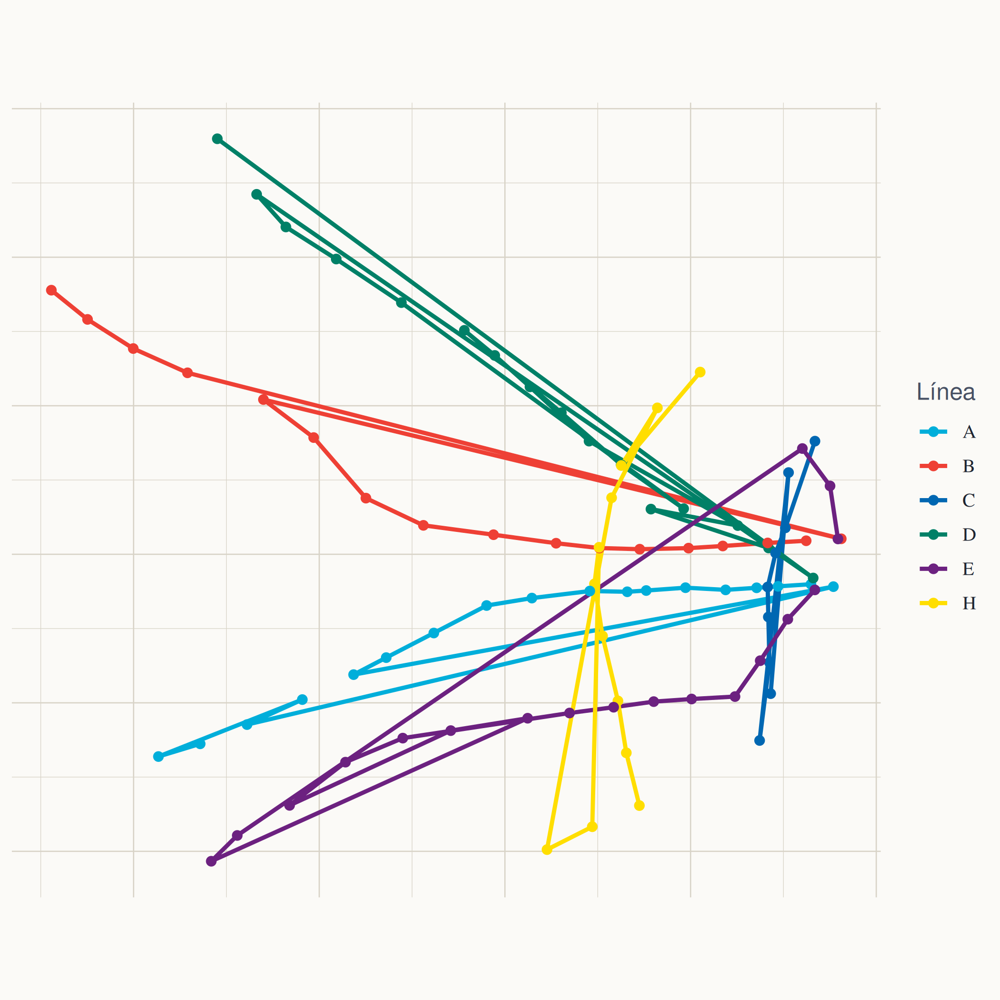
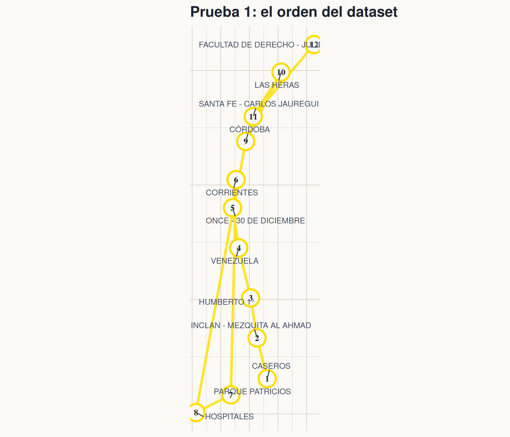
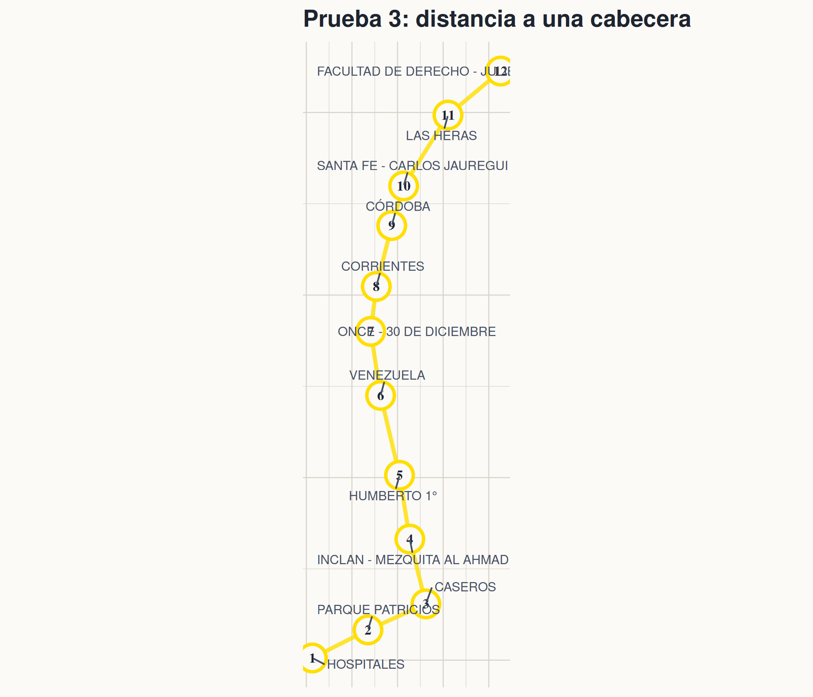
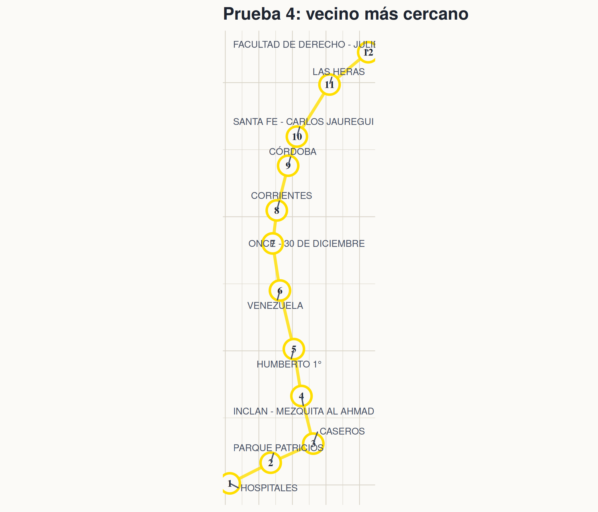
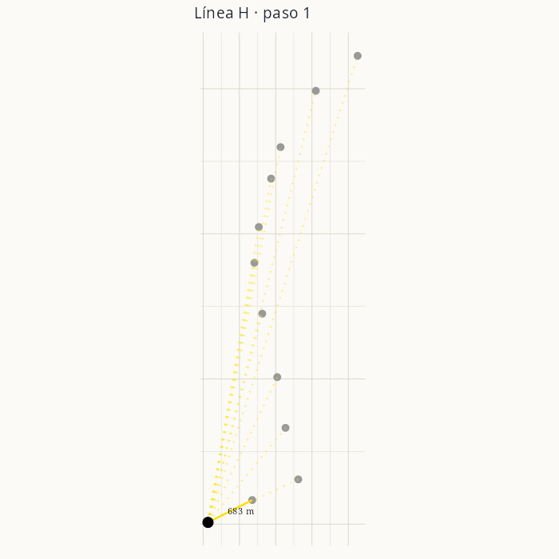
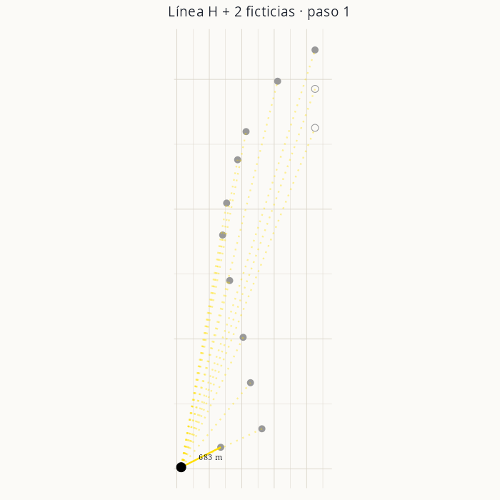
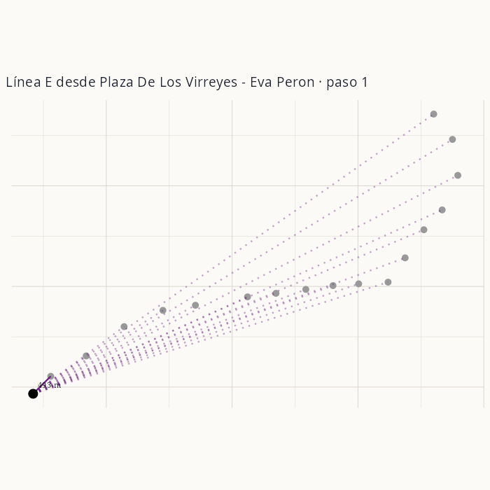
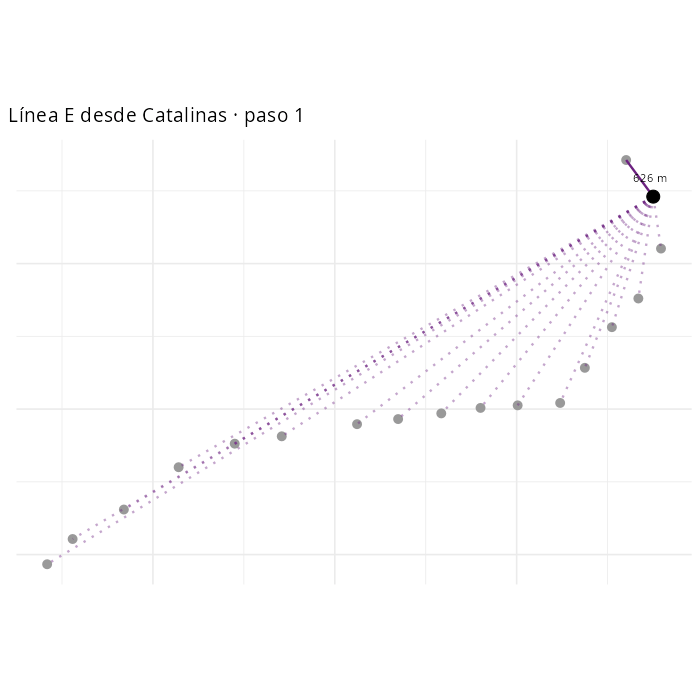
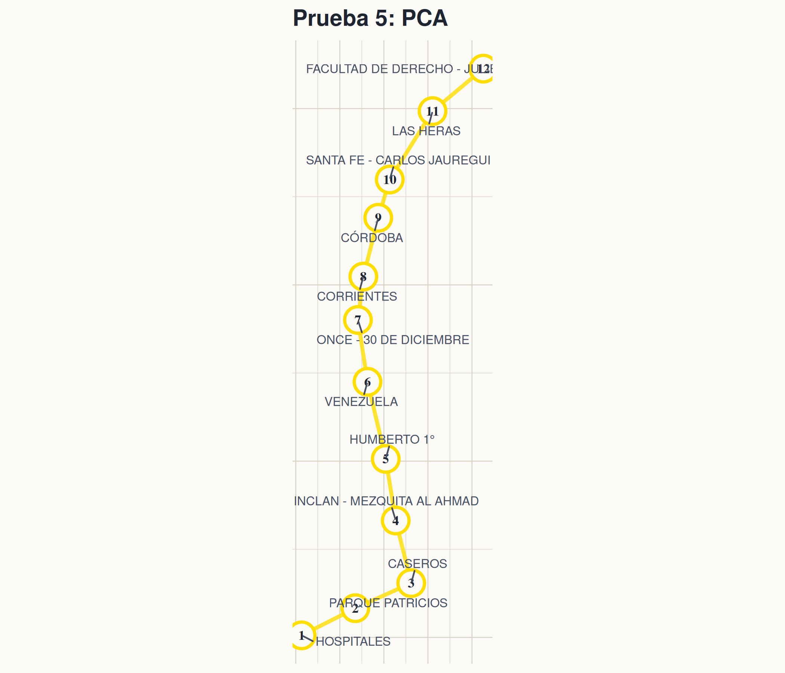
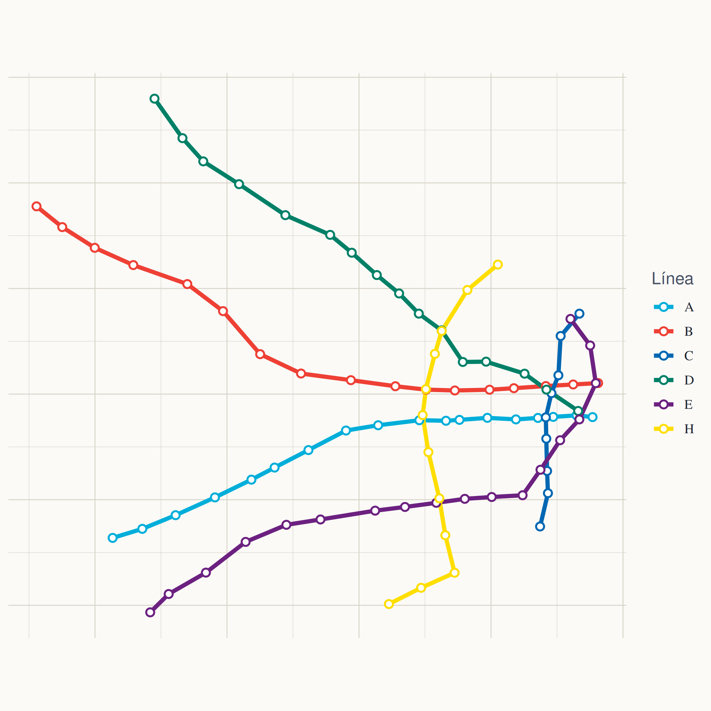

Cómo complicar un problema sencillo
SobrePensar
R
sf
análisis espacial
transporte
docencia
Y encontrar una excusa para hablar del subte
NotaTL;DR
- El dataset oficial de estaciones de subte no viene ordenado según el recorrido de cada línea, así que calcular “la distancia entre una estación y la siguiente” no es tan directo como parece.
- Con sólo las distancias entre estaciones, sin otra información, se puede reconstruir el orden: las cabeceras deberían ser el par más lejano.
- Los atajos (ordenar por distancia a una cabecera, el vecino más cercano, PCA) funcionan en cuando la línea se mantiene relativamente recta y fallan cuando dobla o dos estaciones no consecutivas se acercan demasiado.
- Las cabeceras no siempre son el par más lejano: en la E, Catalinas está más lejos de Plaza de los Virreyes que Retiro, la cabecera real.
- Ordenando cada línea con el vecino más cercano desde la cabecera correcta, la distancia media entre estaciones consecutivas es de 654 m. El tramo más corto está entre PASCO y ALBERTI (línea A, 256 m) y el más largo entre FEDERICO LACROZE y TRONADOR - VILLA ORTÚZAR (línea B, 1.084 m).
- El dataset de líneas tiene los segmentos individuales y medirlas es objetivamente la manera más sencilla resolverlo, este ejercicio busca explorar algunos algoritmos sencillos para resolver problemas geográficos.
El problema
¿Cuál es la mejor línea de subte de la ciudad?.
La respuesta es sencilla, la línea E, por muchísimos motivos que aún no están preparados para escuchar. Ahora bien, hay muchos puntos que podemos analizar para responder a esa pregunta de manera más o menos objetiva, y si recientemente te encontraste con una estación cerrada y decidir si caminar a la siguiente, hoy vamos a sobre complejizar cuanto en promedio te tocaría caminar.
La pregunta es inocente: ¿cuál es la distancia promedio entre estaciones del subte de Buenos Aires? La Ciudad publica un dataset con la ubicación de cada estación en Buenos Aires Data, así que debería ser cuestión de bajarlo, calcular distancias entre estaciones consecutivas y promediar.
sf::read_sf() lee el GeoJSON directo desde la URL, sin descargarlo antes:
Código
url_estaciones <- "https://cdn.buenosaires.gob.ar/datosabiertos/datasets/sbase/subte-estaciones/estaciones-de-subte.geojson"
estaciones_crudas <- read_sf(url_estaciones) %>%
janitor::clean_names() # ID, ESTACION, LINEA -> id, estacion, linea
glimpse(estaciones_crudas)Rows: 90
Columns: 4
$ id <dbl> 1, 2, 3, 4, 5, 6, 7, 8, 9, 10, 11, 12, 13, 14, 15, 16, 17, 18…
$ estacion <chr> "CASEROS", "INCLAN - MEZQUITA AL AHMAD", "HUMBERTO 1°", "VENE…
$ linea <chr> "H", "H", "H", "H", "H", "D", "D", "D", "D", "D", "D", "D", "…
$ geometry <POINT [°]> POINT (-58.39893 -34.63575), POINT (-58.40097 -34.62938…Código
st_crs(estaciones_crudas)$input[1] "WGS 84"Hay un id, el nombre de la estación, la línea y un punto. Para que el ejemplo sea manejable arranco con una sola línea, la H, y después generalizo.
NotaConcepto: CRS, o por qué reproyectar antes de medir
Las coordenadas vienen en WGS84 (EPSG:4326): latitud y longitud en grados. Un grado de longitud no mide lo mismo en Buenos Aires que en el ecuador, así que restar coordenadas “a mano” no da metros.
sf resuelve esto de dos maneras:
- Con coordenadas geográficas,
st_distance()usa la librería s2 y calcula distancias sobre la esfera. - Con un CRS proyectado, las coordenadas ya están en metros y la distancia es la euclidiana de toda la vida.
Para todo el post reproyecto a POSGAR 2007 / Argentina faja 5 (EPSG:5347), el sistema que corresponde para esta parte del país. A la escala de una ciudad, la diferencia entre ambos métodos es mínima (abajo la comparo), pero trabajar en metros simplifica todo lo que viene después, en particular PCA.
Código
estaciones <- estaciones_crudas %>%
st_transform(5347) # POSGAR 2007 / Argentina faja 5, en metros
linea_h <- estaciones %>%
filter(linea == "H")
linea_h %>%
st_drop_geometry() %>%
select(id, estacion)# A tibble: 12 × 2
id estacion
<dbl> <chr>
1 1 CASEROS
2 2 INCLAN - MEZQUITA AL AHMAD
3 3 HUMBERTO 1°
4 4 VENEZUELA
5 5 ONCE - 30 DE DICIEMBRE
6 77 CORRIENTES
7 78 PARQUE PATRICIOS
8 79 HOSPITALES
9 84 CÓRDOBA
10 85 LAS HERAS
11 86 SANTA FE - CARLOS JAUREGUI
12 87 FACULTAD DE DERECHO - JULIETA LANTERIPrueba 1: confiar en el orden del dataset
Asumo que las filas y el id replican el orden del recorrido y mido de cada una a la siguiente.
Código
n <- nrow(linea_h)
dist_ingenua <- st_distance(
linea_h$geometry[-n],
linea_h$geometry[-1],
by_element = TRUE
)
mean(dist_ingenua)1520.76 [m]Código
sum(dist_ingenua)16728.36 [m]Dibujarlo es la forma más rápida de saber si el número tiene sentido: uno las estaciones en el orden en que aparecen en la tabla.
Código
mapa_orden(linea_h, "Prueba 1: el orden del dataset", etiqueta = "estacion")
El id no sigue el recorrido, así que el promedio “ingenuo” mezcla saltos entre estaciones que no son vecinas. Y si bien hubiese sido una gran adición para Accidental aRt, (que descanse en paz), antes de medir, tendremos que ordenar.
TipDe paso: ¿cuánto cambia medir en grados vs en metros?
Código
linea_h_wgs84 <- st_transform(linea_h, 4326)
tibble(
esfera_s2 = sum(st_distance(linea_h_wgs84$geometry[-n], linea_h_wgs84$geometry[-1], by_element = TRUE)),
plano_5347 = sum(dist_ingenua)
) %>%
mutate(diferencia_pct = as.numeric((plano_5347 - esfera_s2) / esfera_s2 * 100))# A tibble: 1 × 3
esfera_s2 plano_5347 diferencia_pct
[m] [m] <dbl>
1 16754. 16728. -0.155A esta escala, si bien todavía la distancia no es la real (ya quisiéramos, es la mitad), la diferencia es despreciable.
Primera idea: las cabeceras
Si no tengo el orden, ¿qué tengo? Las distancias entre todas las estaciones. Y hay algo que esas distancias tienen que cumplir en cualquier línea más o menos recta: las dos estaciones más lejanas entre sí son las puntas.
Prueba 2: el máximo de la matriz de distancias
Código
distancias <- units::drop_units(st_distance(linea_h))
dim(distancias)[1] 12 12Código
round(distancias[1:12, 1:12]) 1 2 3 4 5 6 7 8 9 10 11 12
1 0 732 1439 2337 3046 3520 695 1378 4162 5361 4585 5894
2 732 0 708 1606 2315 2792 1095 1685 3440 4664 3869 5222
3 1439 708 0 899 1607 2084 1729 2218 2737 3981 3170 4564
4 2337 1606 899 0 710 1195 2572 2972 1865 3159 2309 3789
5 3046 2315 1607 710 0 496 3270 3635 1182 2516 1634 3187
6 3520 2792 2084 1195 496 0 3764 4130 688 2035 1141 2724
7 695 1095 1729 2572 3270 3764 0 683 4437 5707 4879 6292
8 1378 1685 2218 2972 3635 4130 683 0 4817 6131 5267 6752
9 4162 3440 2737 1865 1182 688 4437 4817 0 1358 453 2070
10 5361 4664 3981 3159 2516 2035 5707 6131 1358 0 916 751
11 4585 3869 3170 2309 1634 1141 4879 5267 453 916 0 1647
12 5894 5222 4564 3789 3187 2724 6292 6752 2070 751 1647 0
NotaConcepto: la matriz de distancias
st_distance(x) con un solo argumento devuelve una matriz de \(n \times n\) donde la celda \((i, j)\) es la distancia entre la estación \(i\) y la \(j\). Tiene dos propiedades que conviene tener presentes:
- Diagonal en cero: la distancia de una estación a sí misma.
- Simetría: \(d(i, j) = d(j, i)\). Toda la información está en el triángulo superior (o en el inferior).
La simetría tiene una consecuencia práctica inmediata, como se ve en la próxima prueba.
Código
which(distancias == max(distancias), arr.ind = TRUE) row col
12 12 8
8 8 12Aparecen dos filas, porque el máximo está una vez en \((i, j)\) y otra en \((j, i)\). Los dos índices de una de esas filas son las dos cabeceras.
Código
indices_cabeceras <- which(distancias == max(distancias), arr.ind = TRUE)[1, ]
linea_h %>%
slice(indices_cabeceras)Simple feature collection with 2 features and 3 fields
Geometry type: POINT
Dimension: XY
Bounding box: xmin: 5645567 ymin: 6166024 xmax: 5647629 ymax: 6172453
Projected CRS: POSGAR 2007 / Argentina 5
# A tibble: 2 × 4
id estacion linea geometry
<dbl> <chr> <chr> <POINT [m]>
1 87 FACULTAD DE DERECHO - JULIETA LANTERI H (5647629 6172453)
2 79 HOSPITALES H (5645567 6166024)Funciona. Facultad de Derecho y Hospitales son las cabeceras de la H. Con las puntas identificadas, falta ordenar las del medio.
¿Y las del medio?
Prueba 3: ordenar por distancia a una cabecera
La idea más simple que se me ocurre es ordenar todas las estaciones según qué tan lejos están de una cabecera: la más cercana va segunda, la que sigue tercera, etc.
Código
inicio <- indices_cabeceras[2] # Hospitales: recorro de sur a norte
linea_h_p3 <- linea_h %>%
slice(order(distancias[inicio, ]))Código
mapa_orden(linea_h_p3, "Prueba 3: distancia a una cabecera", etiqueta = "estacion")
Funciona! En un tramo relativamente recto anda perfecto, útil para las líneas de la Ciudad. Pero la distancia a la cabecera es una distancia en línea recta, y si dos estaciones intermedias no consecutivas se acercaran, por ejemplo debido a una curva muy pronunciada, produciría resultados erróneos.
Prueba 4: el vecino más cercano
En lugar de mirar siempre la cabecera, avanzo paso a paso: desde la estación actual, voy a la más cercana que todavía no visité.
Código
recorrido <- inicio
for (paso in seq_len(n - 1)) {
actual <- recorrido[length(recorrido)]
candidatos <- setdiff(seq_len(n), recorrido)
siguiente <- candidatos[which.min(distancias[actual, candidatos])]
recorrido <- c(recorrido, siguiente)
}
linea_h_p4 <- slice(linea_h, recorrido)Código
mapa_orden(linea_h_p4, "Prueba 4: vecino más cercano", etiqueta = "estacion")
Es más robusto, porque cada decisión es local. Pero es un algoritmo greedy (goloso) que nunca vuelve atrás. Si en algún paso dos estaciones están casi a la misma distancia y elige “mal”, puede saltearse una y tener que volver a buscarla al final, con un salto largo.
Para ver exactamente dónde falla, en la imágen de la derecha agrego dos estaciones que simulan,con una curva exagerada, la extensión nunca finalizada de la traza a retiro y el “plan” de la estación Padre Mugica en el barrio 31.


Advertencia
Este algoritmo depende de que las cabeceras efectivamente sean las más lejanas y de elegir la correcta. Me di cuenta (tarde) de que en la línea E, Retiro está más cerca de Plaza de los Virreyes que Catalinas: si arrancamos desde Catalinas, hay un salto.


Para otros ejemplos gráficos de como funciona este algoritmo, y por qué si bien es rápido, no es el adecuado para este problema.
Prueba 5: PCA
Otra forma de pensarlo: si la línea es aproximadamente recta, existe una dirección sobre la que se extiende. El análisis de componentes principales (PCA) encuentra justamente esa dirección, la de mayor varianza. Proyecto cada estación sobre ese eje y ordeno por la proyección.
Código
coords <- st_coordinates(linea_h)
pca <- prcomp(coords)
summary(pca)$importance PC1 PC2
Standard deviation 2269.26218 395.60263
Proportion of Variance 0.97051 0.02949
Cumulative Proportion 0.97051 1.00000Código
linea_h_p5 <- slice(linea_h, order(pca$x[, 1]))Código
mapa_orden(linea_h_p5, "Prueba 5: PCA", etiqueta = "estacion")
Es elegante y no necesita saber dónde están las cabeceras. Pero sufre la misma limitación que la prueba 3: si la línea dobla, dos estaciones pueden proyectarse casi en el mismo punto del eje aunque estén lejos en el recorrido.
¿Y entonces?
Cinco pruebas y una sola línea. Confiar en el orden del dataset fue lo único que falló de entrada. Las cabeceras salieron del máximo de la matriz de distancias, y para las estaciones del medio la distancia a una cabecera y el vecino más cercano devolvieron el recorrido de la H sin problemas. PCA llega a lo mismo por otro camino.
Las tres son lo que se llama heurísticas: atajos razonables que suelen dar una buena respuesta, sin garantía de que sea la correcta. Y comparten la misma limitación: funcionan porque los subtes se extienden de manera radial o lineal. Alcanzó con estirarla hacia Retiro, para que el vecino más cercano se perdiera. La distancia a la cabecera y PCA se rompen igual en cuanto la traza dobla sobre sí misma. Y la E muestra que ni siquiera las cabeceras son seguras: el par más lejano es Plaza de los Virreyes y Catalinas, no Retiro.
Con esos cuidados, la pregunta del bar tiene una primera respuesta. Ordenando cada línea con el vecino más cercano desde la cabecera correcta, la distancia promedio entre estaciones consecutivas es de 654 m. El tramo más corto está entre PASCO y ALBERTI (línea A, 256 m) y el más largo entre FEDERICO LACROZE y TRONADOR - VILLA ORTÚZAR (línea B, 1.084 m). La línea con las estaciones más juntas es la C (527 m en promedio) y la más espaciada, la B (730 m).
La solución, para todas las líneas: el vecino más cercano de la prueba 4, arrancando desde la segunda cabecera del par más lejano.
Código
vecino_desde_cabecera_2 <- function(datos) {
d <- units::drop_units(st_distance(datos))
n <- nrow(d)
cabeceras <- which(d == max(d), arr.ind = TRUE)[1, ]
recorrido <- cabeceras[2]
for (paso in seq_len(n - 1)) {
actual <- recorrido[length(recorrido)]
candidatos <- setdiff(seq_len(n), recorrido)
siguiente <- candidatos[which.min(d[actual, candidatos])]
recorrido <- c(recorrido, siguiente)
}
slice(datos, recorrido)
}
red_ordenada <- estaciones %>%
split(.$linea) %>%
map(vecino_desde_cabecera_2) %>%
do.call(rbind, .)Código del mapa
red_ordenada %>%
mutate(x = st_coordinates(geometry)[, 1], y = st_coordinates(geometry)[, 2]) %>%
st_drop_geometry() %>%
ggplot(aes(x, y, color = linea, group = linea)) +
geom_path(linewidth = 1.4) +
geom_point(size = 2, fill = "white", shape = 21, stroke = 1) +
scale_color_manual(values = COLORES_LINEAS) +
coord_equal() +
labs(x = NULL, y = NULL, color = "Línea") +
tema_subte() +
theme(axis.text = element_blank(), legend.position = "right")
Pero ese número depende de haber elegido bien desde dónde arrancar. Para no depender de eso necesito un método que no asuma que la línea es recta, y resulta que ese problema ya tiene nombre: el del viajante. Queda para la próxima.
Código y datos: github.com/jpcib/subte_estaciones. Fuente: Buenos Aires Data, estaciones de subte.